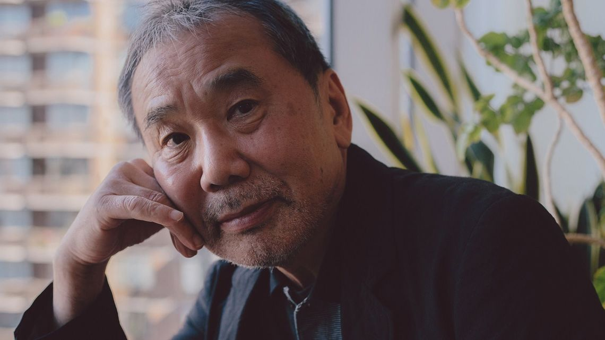

무라카미 하루키는 일본의 소설가, 수필가, 르포 작가이자 번역가이다. 무라카미 류와 함께 일본의 한 세대를 풍미한 작가로 대접받는다. 요시모토 바나나와 함께 해외에서도 유명한 작가인데, 특히 서구권에서 인물의 작품 대부분이 번역된 몇 안 되는 일본 작가이며, 대한민국 출판업계에서도 주요 출판사의 통계상 21세기 들어 가장 인지도 높은 일본 작가 가운데 한 명으로 꼽힌다.
소설 《바람의 노래를 들어라》로 1979년 군조 신인 문학상을 받으면서 데뷔하였다. 1987년 발간된 《노르웨이의 숲》이 430만 부 이상 팔린 베스트셀러가 되면서 국내외적으로 무라카미 하루키 붐이 일어나게 되었다. 단편 소설, 장편 소설을 포함하여 에세이, 논픽션, 기행집 집필 활동도 활발하고 영미 문학 일역가로서도 활동한다. 30대 후반부터는 소설도 소설이지만 세계 각지를 여행하면서 에세이를 많이 쓰기도 했다. 2015년 타임 선정 세계에서 가장 영향력 있는 인물 100인 Icon 부문에 선정되었다.